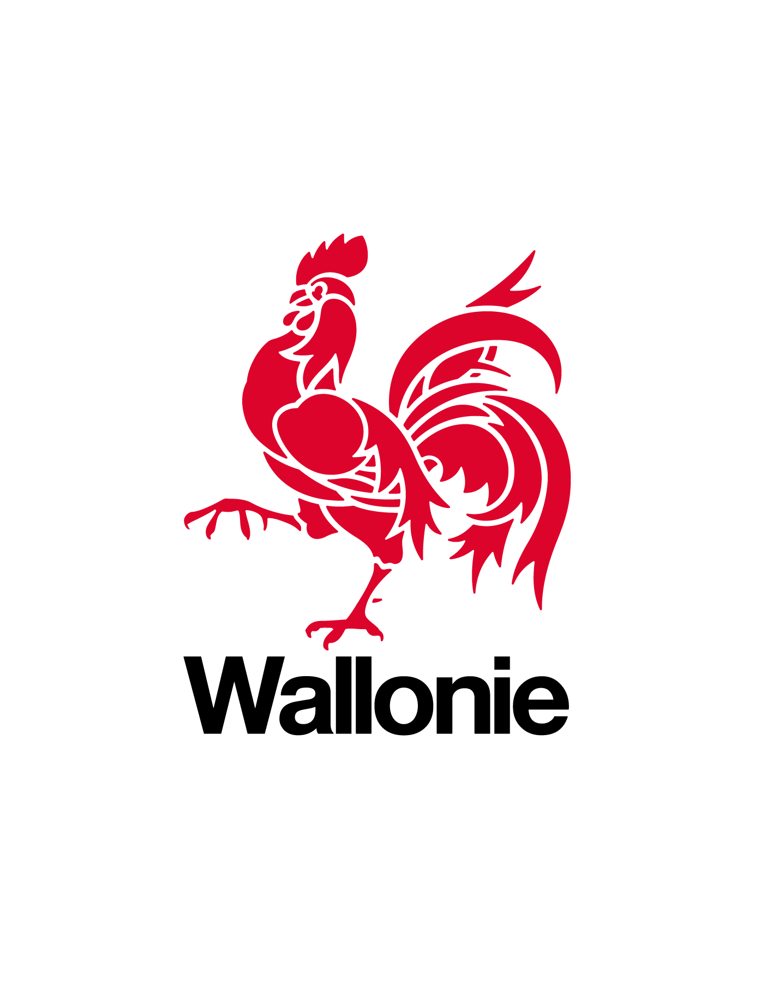

Plateforme Expérience Développeur
État des lieux – Vision – Options d'évolution
Agenda
- Le point de vue du développeur
- Qu'est-ce qu'une plateforme Expérience Développeur (DevEx) ?
- Vision & objectifs
- Ce que le SPW Digital a déjà aujourd'hui
- Offre NSI : analyse
- Approche hybride proposée
- Conclusion & prochaines étapes
Le point de vue du développeur
Une bonne expérience développeur = plus de productivité, moins de friction.
Persona : Développeur SPW
Ses attentes clés :
Problèmes rencontrés aujourd'hui
Onboarding chronophage
- Formulaires Excel pour demander des environnements
- Processus lents de provisionnement (plusieurs semaines)
- Documentation éparpillée et parfois obsolète
Manque de visibilité
- Pas d'accès direct aux logs de production
- Métriques et dashboards inexistants ou inaccessibles
Déploiement limité
- Pipelines CI/CD s'arrêtent à l'environnement TEST
- Absence de self-service pour provisionner des environnements
Impact : 2-4 semaines avant qu'un développeur soit pleinement productif
Les Chiffres Clés
Temps productivité
-75%
3-4 sem. → 1 sem.
Temps senior mobilisé
-87%
10-15h → 1-2h
Satisfaction développeur
+125%
4/10 → 9/10
Premier déploiement
-94%
J+17 → J+1
Qu'est-ce qu'une plateforme développeur ?
Pas un outil unique – un produit interne au service des équipes.
Un écosystème complet
Au-delà d'un simple framework de briques réutilisables :
Outils de développement, CI/CD, infrastructures
Guides, tutoriels, références techniques
Patterns, testing, bonnes pratiques
Canaux de communication, assistance
Feedback continu, amélioration collaborative
Faciliter le quotidien du développeur tout en assurant cohérence, qualité et conformité.
Vision & Objectifs
Une plateforme durable, pas une solution jetable.
Notre Vision
Permettre aux équipes de développement de livrer plus vite, plus souvent, avec un niveau de qualité et de sécurité garanti.
Onboarding rapide — un développeur productif en jours, pas en semaines
Pratiques standardisées — un socle commun qui réduit les frictions entre projets
Autonomie des équipes — moins de dépendances, plus de valeur livrée
Une stratégie de transformation numérique qui place le développeur au cœur de la création de valeur.
Objectifs
Réduire l'onboarding
- Documentation claire et accessible
- Environnements pré-configurés
- Exemples prêts à l'emploi
Standardiser DevSecOps
- Pipelines CI/CD standardisés
- Scans auto sécurité & qualité
- Gestion des secrets & GDPR
Accélérer la production
- Déploiements continus
- Tests automatisés
- Provisionnement rapide
Portail self-service
- Création projets en libre-service
- Accès direct logs & métriques
- Documentation centralisée
Briques Réutilisables Transversales
Briques « Plateforme »
Transverses techniques
- Gestia/Keycloak : authentification & autorisation
- Apicurio : gestion des contrats d'API
Briques « Métier »
Services transverses SPW
- Totem : génération de documents PDF
- Alfresco : GED (Gestion Électronique de Documents)
- COSI : signature électronique
Rôle de l'équipe plateforme : identifier, évangéliser et documenter ces briques – pas les développer.
Bénéfices Attendus
- Réduction du temps d'onboarding des nouveaux développeurs
- Réduction des délais et augmentation de la fréquence des mises en production
- Standardisation des pratiques de développement
- Sécurisation des applications
- Gestion de l'obsolescence
Roadmap
Court terme – Consolidation
Moyen terme – Accélération & automatisation
Long terme – Industrialisation & mesure des gains
Une trajectoire maîtrisée, pas un big bang.
Ce que le SPW a déjà aujourd'hui
La plateforme SPW existe déjà, elle est vivante et utilisée.
Vue d'Ensemble

Portail Développeur
Tutoriels
Apprendre par la pratique
- Créer sa première application
- Déployer sur un environnement
Guides
Comment faire…
- Getting started
- Conventions de code
Explication
Comprendre le pourquoi
- Consignes de développement
- Pourquoi cloud native ?
Référence
Rechercher une info précise
- API & services transverses
- Configuration Maven / Nexus
Capitaliser et diffuser la connaissance plutôt que la perdre.
Framework & Librairies
Librairies
- Spring Boot Parent POM ●
- Sécurité (Gestia/Keycloak) ●
- GED (Alfresco) ●
- Génération Doc (Totem) ●
- eSignature (COSI) ●
- Observabilité ●
Blueprints
- Backend ●
- Frontend ●
Service
- Anonymisation ●
La standardisation libère du temps pour le métier.
Applications de Démonstration
App Legacy (VM)
- Déploiement sur VM traditionnelle
- Spring Boot + Angular
- Pipeline CI/CD standard
App Cloud Native (Tanzu) ● En Cours
- Déploiement conteneurisé
- Spring Boot + Angular
- Pipeline cloud native
Montrer "comment faire", pas seulement "quoi faire".
Infrastructure DevSecOps en place
Code source & CI/CD
Registry d'artefacts
(Maven, npm, Docker)
Scan vulnérabilités
des dépendances
Qualité & sécurité
statique du code
Scan de sécurité
des artefacts
Inventaire composants
& librairies
Utilisateurs
Équipes de développement
Sécurité
DEX
La plateforme est validée par l'usage, pas seulement par le concept.
Support & Accompagnement
Onboarding
- Accueil structuré des développeurs
- Checklist d'intégration
Workshops
- Java & Spring Boot
- Angular
- Git & GitLab CI/CD
Feedback
- Collecte de retours réguliers
- Amélioration continue
La plateforme évolue avec ses utilisateurs.
Offre NSI
Analyse de l'approche
Approche du développement logiciel – Février 2026
Ce que propose NSI
3 piliers de leur approche du développement logiciel :
Méthodologie
- Basée sur Agile
- Équipes autonomes
- Outils : Jira, Bitbucket, Confluence
- Automatisations CI/CD
Librairies
- JCube : librairies Java sur Spring Boot (sécurité, accès données, utilitaires)
- NgCube : librairies Angular + PrimeNG + Tailwind
Générateurs
- Génération d'app vide (DB, Auth OIDC)
- Générateur CRUD (via OpenAPI)
- Templates de layout
NSI apporte une expertise et un packaging éprouvé.
Constat Objectif
Principes déjà présents au SPW :
Agile
Pratiques agiles établies dans les équipes SPW
DevSecOps
Pipeline CI/CD, scans sécurité, qualité du code
L'enjeu n'est pas de repartir de zéro.
Approche Hybride Proposée
SPW owner, NSI accélérateur
Le SPW garde la maîtrise, NSI apporte de la vitesse.
Principes
SPW Digital reste propriétaire de
- La vision de la plateforme
- La standardisation du socle technologique
- La plateforme elle-même
- La gouvernance
NSI intervient de manière ciblée
- Apport de composants spécifiques
- Transfert de connaissances
- Accélération ponctuelle
- Pas de dépendance long terme
Ce que NSI pourrait apporter
Briques de solution ciblées
- Générateurs ciblés (CRUD, projets)
- Librairies réutilisables adaptées au contexte SPW
Personnalisation SPW
- Intégration Design System SPW
- Playwright (tests E2E)
- Flyway (migrations DB)
Support à l'intégration
- Accompagnement technique ponctuel
Du sur-mesure, pas du clé-en-main figé.
Garder la maîtrise au SPW
NSI forme des référents SPW
- Transmission de la connaissance vers l'interne
- Autonomie progressive des équipes SPW
- Le SPW capitalise sur l'investissement
Investir dans les compétences internes plutôt que dans la dépendance.
Bénéfices de l'Approche Hybride
du delivery
des risques
interne
des coûts
de la solution
Le meilleur des deux mondes.
Risques & Critères de Décision
Risques & Mitigations
| Risque | Mitigation |
|---|---|
| Manque de capacité équipe plateforme | Recrutements/formations ciblées, externalisation ponctuelle |
| Résistance au changement | Communication transparente, Quick Wins visibles, accompagnement |
| Sous-estimation de la complexité | Approche progressive (MVP → industrialisation), réajustements |
| Compétition avec prestataires existants | Valoriser la complémentarité (plateforme = socle, prestataires = métier) |
Critères de Décision
Décider sur des critères objectifs, pas sur l'effet vitrine.
Conclusion
Les fondations existent
Infrastructure DevSecOps, portail développeur, librairies, projets utilisateurs
Le SPW doit rester propriétaire
Autonomie technologique, pas de lock-in, montée en compétence interne
NSI comme accélérateur
Collaboration ciblée, transfert de compétences, briques sur mesure
Nous avons besoin de votre soutien pour pérenniser l'équipe plateforme et poursuivre cette dynamique.
Prochaines étapes
- Valider la vision de la plateforme DevEx
- Confirmer l'approche produit (plateforme = produit interne)
- Explorer une collaboration ciblée avec NSI
- Lancer un pilote si pertinent
Construire une plateforme durable au service du SPW.
Questions ?
Merci pour votre attention